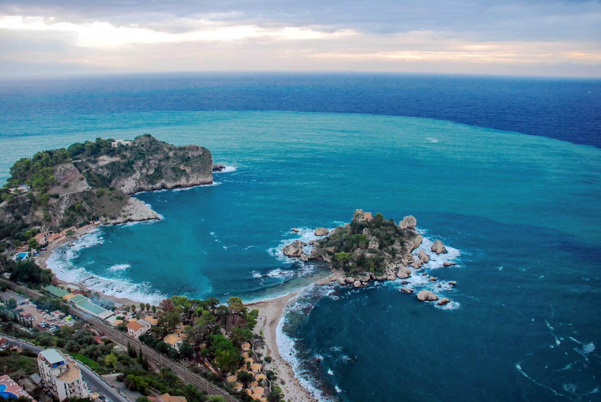

LUGARES HERMOSOS
Sicilia,Italia
Paris,Francia
Lago lugano,Suiza
Sicilia,Italia
Esta isla italiana tiene todo el derecho a pertenecer al listado de lo mejor de Italia. Un conglomerado perfecto de gastronomía, cultura, naturaleza e historia rodeado del Mediterráneo te están esperando. No te deberías perder los enclaves arqueológicos de Selinunte, Segesta y Agrigento, así como las joyas arquitectónicas de Palermo, Monreale, Siracusa y Catania. Por otro lado, los amantes de los paisajes disfrutarán con la belleza de volcán Etna y las vecinas islas Eolias. Además, Sicilia todavía mantiene un rango de precios bajos y recibe vuelos de compañías aéreas de bajo coste que la hacen ser un destino muy atractivo para viajeros con todo tipo de bolsillos.
Paris,Francia
París, la capital de Francia y una de las ciudades más románticas del mundo, es un destino perfecto para pasar unos días con amigos o en pareja disfrutando de largos paseos románticos por la orilla del Sena o por los barrios de Montmartre y Le Marais, además de ver algunos de los monumentos más famosos de Francia como la Torre Eiffel, el Louvre, la Sainte Chapelle o la malograda Catedral de Notre Dame, que esperemos que pronto vuelva a brillar.
- Recuerda que la forma más cómoda y rápida
para moverte por París es utilizando el extenso
metro que tiene paradas en todos los puntos de
interesantes de la ciudad
Lago lugano,Suiza
El lago Lugano se encuentra en la frontera suiza / italiana en Ticino, el único cantón oficial de habla italiana de Suiza. En las ciudades alrededor del lago de Lugano y el lago Maggiore al oeste, la sensación de Italia es inconfundible en la arquitectura, las plazas y la pasión por la buena comida, que se extiende por las fronteras italianas desde el sur, el este y el oeste. Los visitantes pueden explorar el área recorriendo el lago en uno de los barcos de vapor blancos o alquilando un bote. Para una visión panorámica, Monte San Salvatore ofrece una de las vistas más espectaculares de los alrededores, el lago y los picos nevados.